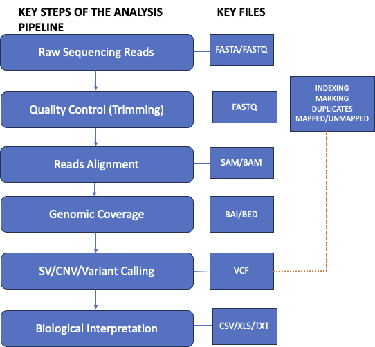

![]()
Mata Kuliah Teknik Pemeriksaan Virus
Kegiatan perkuliahan ini dilaksanakan pada High Performance Computer di Laboratorium Molekuler dan Virologi di Laboratorium Mikrobiologi Klinik FKUI Halaman Booking HPC
Workflow analisis

Analisis sekuens, QC, dan reads alignment
- Aktivasi environment bioconda
conda activate MOOC- Buat folder sesuai nama kelompok
- Lalu masuk ke folder yang sudah dibuat
mkdir kelompok1 #kelompok1 mkdir kelompok2 #kelompok2- Copy paste ke terminal kode berikut untuk masuk ke folder
cd kelompok1 #kelompok1 cd kelompok2 #kelompok2 - Download sekuens dari Sequence Resource Analysis (SRA), setelah berhasil masuk ke
fastq-dump --split-files ERR5743893 #kelompok1
fastq-dump --split-files ERR5743894 #kelompok2
ls- Buat folder baru untuk analisis QC hasil sekuensing
- Kelompok 1
mkdir -p QC_Reports cd cd kelompok1 fastqc ERR5743893_1.fastq ERR5743893_2.fastq --outdir QC_Reports- Kelompok 2
mkdir -p QC_Reports cd cd kelompok2 fastqc ERR5743894_1.fastq ERR5743894_2.fastq --outdir QC_Reports- buka hasil analisis qc dalam folder QC_Reports
- Buka folder kelompok
multiqc . - Tahap sekuens Mapping
- buat folder untuk mapping dengan kembali ke folder kelompok di terminal terlebih dahulu
cd cd kelompok1 #kelompok1 cd kelompok2 #kelompok2 cp ~/MN908947.fasta ~/kelompok1/ #kelompok1 cp ~/MN908947.fasta ~/kelompok2/ #kelompok2 mkdir mapping - Tahapan alignment dengan sekuens SARS-CoV-2 yang sudah diketahui
Membuat sekuens MN08947.fasta sebagai genome reference
buka folder mapping masing-masing kelompok
bwa index MN908947.fasta #dalam folder kelompok samtools faidx MN908947.fasta cd #kembali ke home cd kelompok1 #masuk ke folder kelompok 1 cd kelompok2 #masuk ke folder kelompok 2 #kelompok1 bwa mem MN908947.fasta ERR5743893_1.fastq ERR5743893_2.fastq > mapping/ERR5743893.sam #kelompok2 bwa mem MN908947.fasta ERR5743894_1.fastq ERR5743894_2.fastq > mapping/ERR5743894.sam- Mengubah file “.sam” menjadi “.bam”
cd mapping ls -lhrt #kelompok1 samtools view -@ 20 -S -b ERR5743893.sam > ERR5743893.bam #kelompok2 samtools view -@ 20 -S -b ERR5743894.sam > ERR5743894.bam- Mengurutkan sekuens genom berdasarkan referensi
#kelompok1 samtools sort -@ 32 -o ERR5743893.sorted.bam ERR5743893.bam #kelompok2 samtools sort -@ 32 -o ERR5743894.sorted.bam ERR5743894.bam- Buat index mapping
#kelompok1 samtools index ERR5743893.sorted.bam #kelompok2 samtools index ERR5743894.sorted.bam
Genomic coverage
Buka website
Tutorial
buka folder masing-masing kelompok dan masuk ke dalam folder melalui desktop
- Klik Genomes → local
masukan file .fasta dan.fai
- Klik tracks → local
masukan file .sorted.bam dan .sorted.bam.bwi
Klik Genomes → pilih SARS-CoV-2 dari database
- Klik tracks → local
masukan file .sorted.bam dan .sorted.bam.bwi
NoteProtein S spike berada pada urutan genom nukleutida urutan berapa?
Kelompok 2: 21,563-25,384
Kelompok 1: 21,563-25,384
Variant calling
- Untuk variant calling praktikum ini akan digunakan freebayes
#kelompok1
freebayes -f MN908947.fasta ~/kelompok1/mapping/ERR5743893.sorted.bam > ERR5743893.vcf #kelompok1
bgzip ERR5743893.vcf
tabix ERR5743893.vcf.gz
bcftools query -f '%TYPE\n' ERR5743893.vcf.gz | sort | uniq -c
#kelompok2
freebayes -f MN908947.fasta ~/kelompok2/mapping/ERR5743894.sorted.bam > ERR5743894.vcf #kelompok2
bgzip ERR5743894.vcf
tabix ERR5743894.vcf.gz
bcftools query -f '%TYPE\n' ERR5743894.vcf.gz | sort | uniq -cBerapa SNPs dan Indel yang anda peroleh?
Kelompok 2: 4 INDEL, 2 MNP, 89 SNP
Kelompok 1: 1 INDEL 75 SNP
Citation
@online{ariyanto2025,
author = {Ariyanto, Ibnu},
title = {Praktikum {Teknik} {Pemeriksaan} {Virus:} {Analisis} Data
Sekuensing Virus {SARS-CoV-2}},
date = {2025-06-16},
url = {https://ibnuariyanto.github.io/post/2025-06-14-Analisis-genom-sars-cov-2},
langid = {en}
}